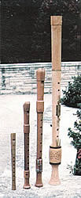

"Music alone with sudden charms can bend the wand'ring sense, and calm the troubled mind."
(William Congreve)
I well remember sitting - through seemingly endless little-girl afternoons - with a violin wedged under my chin and a bow clutched in my hand . . . while my well-intentioned music teacher hovered over me and told me what a fine musician I'd be someday. Unfortunately, my clumsy fingers didn't ever quite justify her faith . . . and in my frustration I vowed to give up music entirely as soon as I reached the age of consent!
I would've done it, too, except that - to my surprise - my love of rhythm and melody increased over the years. Furthermore, in time I realized that I hadn't been defeated by the music. . . I'd merely been beaten by a single demonic instrument. Therefore (I assured myself), I could satisfy my yearning to perform by simply finding one that was a little easier to play. And after a few more disappointments, I finally discovered such a treasure . . . the recorder!
Said to be the ancestor of the flute, the recorder (which reached its modern form in the fifteenth century) not only has one of the loveliest "voices" among all the folk woodwinds, but is relatively easy to play.
The instrument's body, as shown in the illustration, will generally consist of three parts: the head (which contains the mouthpiece) . . . the middle joint (it has six finger holes in front and a thumb hole in back) . . . and the foot (with the seventh finger hole, or a pair of holes, used for playing the lower semitones).
CAREFUL SELECTION
The first step toward making beautiful music, of course, will be acquiring a good instrument. You'll find, when you begin to shop around, that recorders vary widely in size, material, and quality. Each will have a different tone, and some are likely to sound more pleasing to you than others. Inspect as many instruments as you can before you purchase one. After all, if you buy an inferior recorder, you'll risk the same sort of loss of enthusiasm and general discouragement that I encountered when wrestling with the violin.
If you don't trust your own musical expertise to lead you to a quality recorder, take along someone who's qualified to judge woodwinds. Ask your "expert" to check each model for volume . . . construction . . . tone . . . intonation (does it play in tune?) . . . and alternate fingering positions (some notes, you see, can be played in more than one way).
However, it's best for you yourself to know a little bit about recorders before you actually walk into a music store. This article, plus some research (check the library and local colleges for books, and ask your musical friends for advice), can help you meet the challenge of picking out your own recorder.
SIZE AND SOUND
Recorders are made in a whole family of sizes, ranging from the tiny "sopranino" (which produces the highest, most delicate tone) to the "great bass" (with the deepest voice). Between these two are the popular soprano (the size schoolchildren often learn on), the alto (considered by some to be the most important member of the recorder clan), the tenor, and the bass. (Their relative sizes can be seen in one of the accompanying photographs.)
For the beginner, whose primary concern should be to develop playing agility, either the soprano (in the key of C) or the alto (in the key of F) would likely be best. Both are relatively small . . . fit comfortably in the hands . . . and can be found at reasonable prices. The cheerful soprano is ideal for playing the lead or melody in consort (ensemble) performance, and also takes kindly to folk tunes . . . while the mellower alto is preferred for solos and is well suited to playing classical music.
You'll also find that most beginner's method books are written for either or both of these two recorders. In the end, though, the size you decide on will likely be determined - at least in part - by your own musical taste.
MATERIAL BLESSINGS
Recorders are made of either wood or plastic, and each material has its own advantages and disadvantages. Although many advanced musicians prefer the natural tone of an exquisite (and often expensive ) wooden instrument, a beginner can avoid a lot of problems by starting with an easycare, low-cost plastic recorder (do be sure its holes are positioned for English - also called baroque - fingering).
For one thing, the plastic instruments are all but indestructible! You can carry them around in just about any kind of weather without worrying about how temperature changes or moisture might affect their performance. Furthermore, they require practically no care. So if you've a mind to take your recorder with you and play it whenever the mood strikes . . . you can!
Unfortunately, there are a number of low-quality plastic recorders on the market. Two reliable makes you might want to look for are the Aulos and the Zen-On. These reputable brands will cost around $10 (for a soprano) and $15 (for an alto).
Stay with your good plastic instrument until you develop your skills enough to determine whether recorder playing is for you . . . and, if you decide that it is, then consider investing in a wooden one. Not only are the "natural" instruments generally at least twice as expensive as plastic models, but they're also very temperamental and require a good bit of care if they're to maintain their delicate natural tones.
GET THE TECHNIQUE DOWN
Once you've chosen your melodic companion, you might well want to find an instructor who's willing to give you private lessons. (Check out the music departments at local schools and universities . . . chamber music societies . . . or symphony guilds for help in finding a good teacher.)
If you're enterprising, disciplined, and determined, however, you can teach yourself . . . with the aid of a good basic methods book (available at the store where you buy your recorder). Just be sure that the volume includes lessons on correct basic and alternative fingering . . . proper breath control and blowing techniques . . . use of tonguing (to articulate the notes) . . . and appropriate phrasing methods (which can make your music more interesting). And unless you already know how to read music, choose a book with some information about music theory.
Should you decide to learn on your own, I suggest starting with just one text. Study it well . . . then, if you find that it moves too slowly (or too quickly), or doesn't furnish enough information to suit you, you can complement it with another book.
ENJOY
I've been playing the recorder for about two years now. What began as an attempt to make up for my fiddling failure has blossomed into one of the real joys of my life . . . allowing me the opportunity to make music in the company of others (when I play with local ensembles) or to entertain myself during quiet evenings at home.
And I have no doubt that once you sample the simple pleasures of this delightful instrument, you too will discover talents you never thought (but perhaps always wished) you had. Maybe my old music teacher was right after all. With the help of our recorders, you and I just might become fine musicians yet!
HINTS FOR BEGINNERS
[1] Keep your fingers low and close to the holes while you play . . . so that you're always aware of how they'll have to move to make the next note.
[2] Concentrate on developing left-hand dexterity first. (Your "south paw" plays the higher notes, and they're usually the easiest to learn.) Then, once you've mastered that hand, bring your right into play to practice the lower tones.
[3] Start by playing music you're familiar with.
[4] Proper breathing is important, so be sure that your back is straight, allowing you to breathe from your diaphragm.
[5] Above all, listen to how you sound. (Try taping your performance.)
EDITOR'S NOTE: The following books - all published by Berandol Music Limited, Dept. TMEN, 11 St. Josephs Street, Toronto, Ontario, Canada M4Y 1J8 - are excellent basic methods publications and can be ordered through the mail or by phone (416/924-8121) directly from Berandol. (Be sure to add a 10% skipping and handling charge.)
Method for the Recorder by Mario Duschenes. Book I for either soprano or alto costs $4.95 . . . Book II , $8.95.
Basic Recorder Technique by Hugh Orr. Again, Book I is $4.95 and Book II , $8.95.
Berandol also offers a very informative history of recorders: From Castles to Classroom by Barbara Gaizauskas (1981), $14.95.
Sooner or later you might want to join the American Recorder Society (Dept. TMEN, 48 West 21st Street, New York, New York 10010 . . phone 212/675-9042). A year's membership costs $15 in the U.S. and $17.50 in other countries. The society provides a quarterly journal, a membership directory, and two newsletters a year.
|
Photo by Jim Morris Once you've got the hang of solo recorder technique, you'll probably enjoy making harmony with other musicians. Here, the author (left) performs with the Kansas State University Collegium Musicum Ensemble |
 Photo by Jim Morris Four members of the recorder family . . . in order of increasing size, they are soprano, alto, tenor, bass |
|